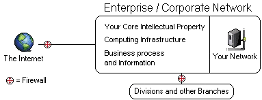
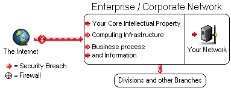

|
Your Corporate Network holds your core intellectual property and other confidential documents. It's the central infrastructure from which you and others in your company can obtain information. Most networks are also connected to the internet however are usually protected by a firewall. A firewall is either a piece of hardware of sometimes software that prevents people from the outside internet to peer into your company files and confidential information. |

|
The protection for your network may not be enough because sometimes you don't know all of the holes that can be in your protection. Sometimes outsiders penetrate into your network and can extract valuable information from your corporate network and can cost you millions of dollars. It's like when you lock up your house. You can't lock the doors you don't know exist. When intruders find these doors, there is no security against them. |
